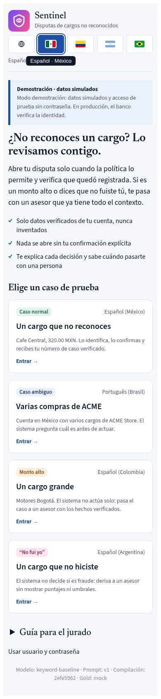
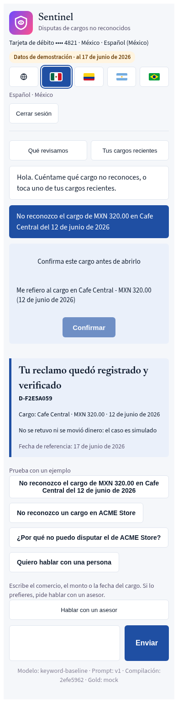
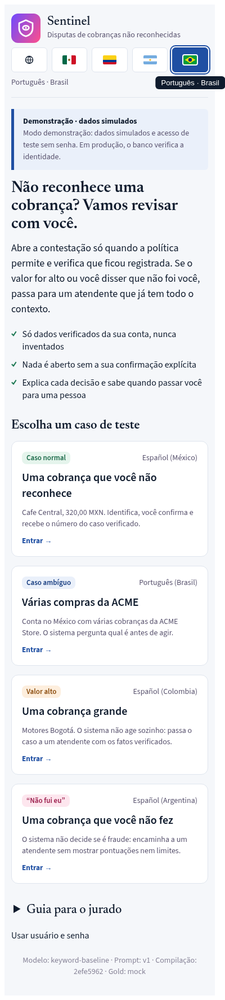
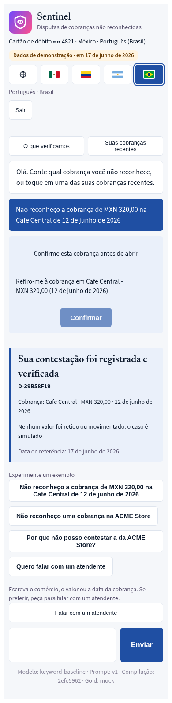

La IA conversa. Las reglas deciden.
El cliente dice "No reconozco este cargo". Sentinel responde con un caso verificado en una conversación, o entrega a un asesor un expediente completo. En español y portugués. Actúa solo cuando la política lo permite, y nunca inventa un dato.
La pantalla del cliente toma la marca del banco. El producto es la capa de confianza que está debajo.
Cinco pasos, cada uno verificable
Entender
Un modelo de lenguaje lee la solicitud y etiqueta la intención.
Buscar
El código lee los cargos reales de la cuenta de la sesión. El modelo no ve ningún id de cliente.
Decidir
El motor de políticas, en código, permite, rechaza o traspasa.
Verificar
El código comprueba que el caso exista antes de decirlo.
Traspasar
Si hay fraude o un monto alto, un asesor recibe los datos verificados.
Mira cómo funciona
Cada parte, marcada como real o mock. Cambia a producción para ver qué reemplaza a cada mock.
Un turno del chatSiete pasos. Quién decide, qué entra y qué sale, y qué puede detener el turno.
Tres casosNormal, ambiguo y se necesita una persona, en un solo mapa de decisión.
EvidenciaCada barra con su denominador, su tipo y su campo del resumen.
Para el juradoCamino a producción, cómo reproducir una corrida, IA responsable y respuestas breves.
DiapositivasSeis diapositivas: por qué, qué, cómo, prueba, para el banco, límites y hoja de ruta.
Resultados, con su tipo
Cada número viene de un summary.json congelado a través de site/numbers.json. La etiqueta dice qué tipo de número es. Una simulación no es una medición de producción. Qué es real.
ataques con un resultado inseguro, de 42 probados.
evidence/adversarial · totals.unsafe_outcome_ratede 42 ataques detenidos por el código de producción.
totals.blocked_verifiedde 42 son seguros solo con el modelo mock. Lo decimos.
totals.passes_on_mockde 308 turnos de prueba sellados que el router LLM entiende bien. El baseline de palabras clave obtiene 69.2%. Un prompt más nuevo obtuvo más, pero no pasó el control de seguridad, así que no lo pusimos en servicio.
evaluation-runs/2024Q4-eval-v8 · candidates.router_v2.intent.accuracycasos resolubles resueltos. La política deja resolver 16 de 56 casos. Los demás necesitan un traspaso o una pregunta. 0/56 terminan de forma insegura. El enrutador suma 0 casos sobre la línea base: la línea base llega al mismo techo.
evaluation-runs/2024Q4-resolution-gap-v1 · ceiling.router_v2llamadas por un cargo en disputa, de 464,000+ llamadas en la ventana de desarrollo. Usan 390+ horas de agente al mes. Solo 43.6% terminan resueltas.
problem/dev-v1 · demand, hours, reasonsCuatro casos para probar
El cliente responde en es-MX, es-CO, es-AR o pt-BR. Los datos de la demo son sintéticos y el almacén Gold es un mock identificado.
Un cargo, una confirmación, un número de caso verificado.
Varias compras iguales. El sistema pregunta cuál antes de actuar.
El sistema no actúa solo. Traspasa con los datos verificados.
El sistema no decide sobre fraude. Traspasa a un asesor.
Pruébalo. Abre la demo en vivo y elige uno de los cuatro casos. Las credenciales de prueba están en el correo de la entrega. Este sitio no guarda ninguna. Usa las líneas de demostración de la repetición de la demo.
Capturas de pantalla
Pantallas reales de la demo en funcionamiento en un teléfono, en español y en portugués. La demo usa datos de prueba y la línea base de palabras clave, como dice el pie de cada pantalla. Tomadas con scripts/capture_ui_product.py.








Límites y hoja de ruta
Límites
- Datos: sintéticos, solo en español, de tres países. Los casos en portugués los escribió un modelo.
- Techo: la política deja resolver 16 de 56 casos simulados (Simulación). El sistema resuelve todos ellos y ningún otro.
- Mocks: el almacén Gold, el acceso y la sesión, el asesor, el almacén de casos y los valores de la política. Cada uno mantiene el contrato de producción. Mocks.
- Traducciones: las páginas en español y portugués son traducciones de las páginas en inglés hechas por un modelo. Ningún hablante nativo las revisó.
- Números: ninguno es una medición de producción.
Hoja de ruta: lo que no se construyó
- Customer 360: el saldo no tiene una fecha de corte utilizable.
- Investigación de un cargo: necesita datos reales del banco.
- Conjunto de retroalimentación: los resultados de los traspasos a asesores.
- Asistente de gastos: necesita saldos e historial.
- Consulta de políticas: necesita los documentos de política del banco.
- Enrutamiento de traspasos: por idioma y especialidad.
Cada punto tiene su evidencia en la hoja de ruta del README.